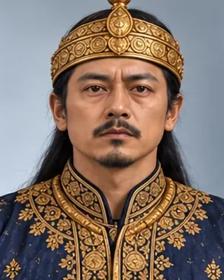

গোবৰ ৰজা
1675 (about 24 days) · Twenty-fifth Ahom king

A puppet king under Debera Borbarua, deposed and executed after about 24 days.
Father of Gadadhar Singha.
Record confidence: medium.
Open interactive profile
1675